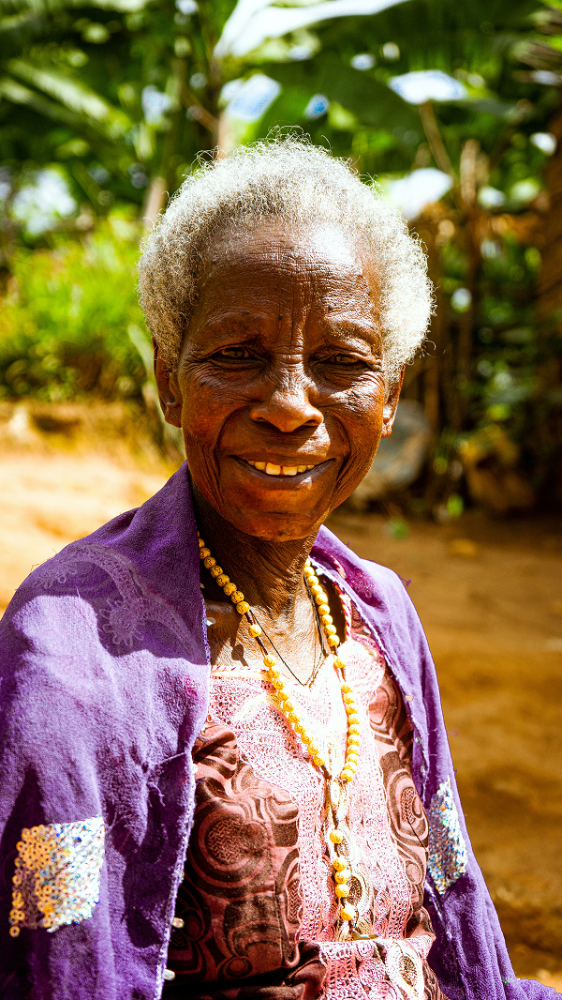
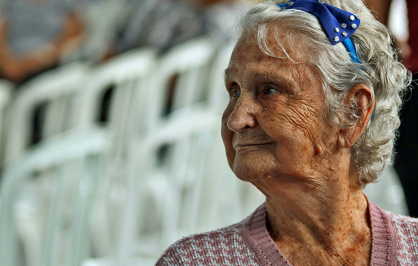
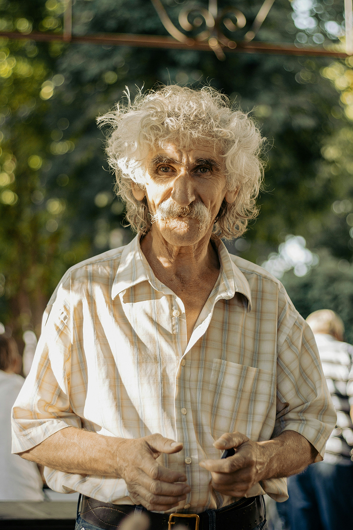

Rétablissons les liens
Et si vous offriez un peu de votre temps à ceux qui en ont le plus besoin ?
Prenez rendez-vous pour partager un moment avec une personne âgée isolée.
Les personnalités à rencontrer
Feuilletez les visages de celles et ceux qui attendent simplement un peu de votre temps.
sourire porte une histoire, chaque rencontre est une promesse.






Comment ca marche
Offrir un peu de votre temps, c'est offrir beaucoup. Découvrez comment planifier une visite en toute simplicité.
1. Choisissez une rencontre
Parcourez les profils de nos aînés et trouvez la personne avec qui vous aimeriez partager un moment chaleureux.
2. Remplissez le formulaire
Indiquez vos disponibilités et vos envies. Cela nous aide à organiser une rencontre adaptée et en toute confiance.
3. Partagez un moment
Rendez visite à la personne âgée dans un cadre bienveillant. Une discussion, une balade ou simplement l'aider à une tâche ! Chaque moment compte.
4. Créez du lien
Si le courant passe, vous pouvez revenir ! Ensemble, tissons des liens durables et combattons l'isolement pas à pas.
Prêt⸱e à faire la différence ?
Offrez un peu de votre temps, partagez un moment, créez du lien... Chaque présence compte. En tendant la main à une personne âgée, vous lui offrez bien plus qu'une visite : une vraie bouffée de chaleur humaine.